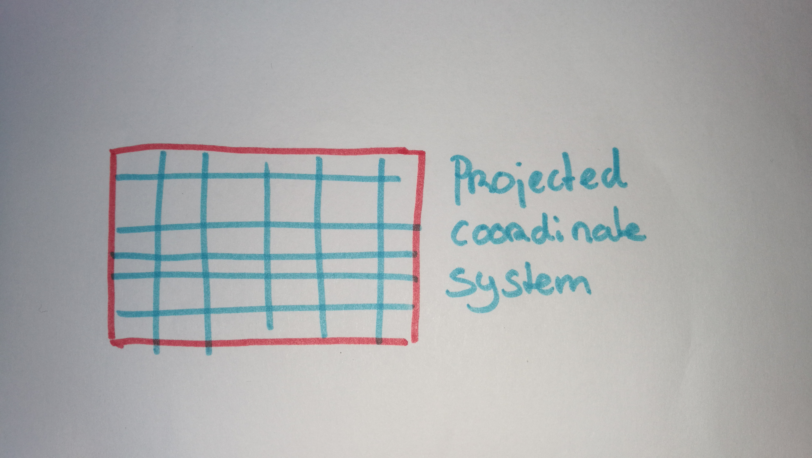

Geo Visualizations for the Web
.. beyond Google Maps ..
Niene Boeijen
nieneb.github.io/tweakers
I am a web cartographer
I make maps
online
interactive
Back-end to front-end
Implement all through code
NieneB.nl


Let's talk maps!
"Everything is related to everything else, but near things are more related than distant things"Tobler's first law of geography
Power of Maps
Our brains organize by location .. why so many relate to maps and geography is that we have no choice but to think and see spatially.
Power of Maps
Maps make sense of things
Maps lend order to complex environments
Reveal patterns and relationships
Map = Collection of Geo data
What is geo data?
geo data = data + location


Maps allow us to communicate about location using a
common framework
Coordinate system
Communicate locations & distances on the Earth's surface

Shape of the earth?

The real shape of the earth is too complex to be useful as a reference for measurement..
Geographic coordinate system

3D model
Longitude Latitude
Geographic Coordinate System:
World Geodetic System 1984 (WGS84) EPSG:4326
Lon Lat in decimal degrees
GPS
WGS84
Standard way to store most geodata for the Web:
{
"type": "Feature",
"geometry": {
"type": "Point",
"coordinates": [5.2394137,52.0819662]
},
"properties": {
"name": "Hotel Theater Figi"
}
}Projected coordinate system
Mathematical projection / translation
2D
Projected Coordinate System:
Spherical/Web Mercator EPSG:3857

We store data in EPSG:4326, but display it in EPSG:3857!
Projected Coordinate System:

Always wrong!

Projected Coordinate System:
RD New EPSG:28992


Reading materials:
Getting my map to the web?

| Digital maps | Web Maps |
|---|---|
| Data | Tiles, styles and servers |
| On the computer | View in a browser |
| Calculate, analyze | Scroll, pan, zoom |

google.com/maps
openstreetmap.org
All kinds of Geo Visualizations!


Open Geospatial Consortium - OGC standards
- WMS Web Map Service
- WMTS Web Map Tile Service
- WFS Web Feature Service
Defacto - Community standard
- Google/OSM (XYZ)
- TMS Tile Map Service
- QuadTrees (microsoft)
Tiled web map
a little History
Digital maps & GIS software
1996 Mapquest first with a web service!
But really slow to load..

2004 - Endoxon found a way for quick online mapping!
2005 Google Maps took over!
The solution?
Tiles!
Tiles
images
256x256 pixels
Placed in a grid, sharing boundaries
Seamless map
Slippy maps, Google/OSM (XYZ) - TMS - QuadTrees (Microsoft)
All these little tiles load way faster than one big map!
Zoom levels
Each zoom level has its own set of tiles!
Zoom level 0: 1 tile for the whole world.
Increases exponentially...
Zoom level 1: 4 tiles
Zoom level 2: 16 tiles
etc.
 Map with tile
bounds
Map with tile
bounds
Serving tiles
Tiles are just images on the web
http://tile.openstreetmap.org/5/16/10.png
https://{s}.tile.osm.org/{z}/{x}/{y}.png

Tiles are styled and rendered in advance

Styling tiles
styling per zoom level
Lot's and lot's of geo data!
country_bounds
xxx
center-line
#0000ff
Disadvantages Raster Tiles
No interaction with objects
No information available about objects
Multiple visualizations = multiple tile sets
elaborate & hard styling syntax
Vector Tiles
the newest technology!
From Raster to Vector

Vector Tile

Arrays in a 256 x 256 matrix
Same tiling schema as Raster png tiles.
Binary format
No colours
Simplifies geometries

Advantages Vector tiles
Rendering is done on client side
Custom styles on client side
Small tile size. Fast
High resolution.
Direct access to feature information.
WebGL
the rendering happens in your browser with the help of your device's graphics processing unit (GPU).
+ rotating and tilting the map (3D)
+ smooth/infinite zooming
WebGL is widely supported in modern browsers

raster tiles

vector tiles

Standards
Mapbox Vector Tile Standard.Based on the binary protocal buffer (.pbf) from Google.
Standard already used by Esri.
Web Mercator projection, Google tiling scheme.
.mvt - .pbf
.mbtiles
About Vector-tiles from Mapbox
style.json
{
"version": 8,
"name": "Mijn eigen Stijl",
"sprite": "url",
"glyphs": "url/{fontstack}/{range}.pbf",
"sources": {...},
"layers": [
{
"id": "background",
"type": "background",
"paint": { "background-color":"#FFFFFF" }
},
{...}
]
}
Interactivity with JavaScript!
( ^ this is CSS )

turf.js
Advanced geospatial analysis for browsers
Creating a simple GeoJSON with Turf.js
let bounds = map.getBounds();
let points = turf.randomPoint(25, {bbox: [-180, -90, 180, 90]});
Alright. Fun.
"But I can't read those labels! Where are my reading glasses?"
To the front-end!
a map is a lot!
- Map Interface and Interaction
- Zoom, panning, clicking etc.
- Map events
- popups markers
- Tiles (raster/vector) as Base Layer
- Additional Data
- File (GeoJSON)
- WMS,WFS
- Tiles
JavaScript
puts it all togehter

JavaScript Libraries for Mapping
When to use what?!

Leaflet.js for simple light weight raster web maps
OpenLayers for more elaborate raster web map with more functionality
ArcGIS Javascript API if your client uses ESRI software
D3.js for data driven info graphics
MapboxGL.js for vector tiles
Tangram for vector tiles alternative
Mapbox Studio for easy cloud solutions
CARTO and buisness intellegence & cloud solutions
HERE Maps and Google Maps API for navigation, Google services and commercial goals
Turf.js for geospatial computation in the browser
Main considerations
Open source vs closed source
Amount of Interactivity or GIS functionality
Amount of data to show
Raster vs Vector
projection
Let's look at:
Leaflet for Raster tile maps
MapboxGL.js for Vector Tile maps
Leaflet.js
An Open-Source JavaScript Library for Mobile-Friendly Interactive Maps
simplicity, performance and usability
Developed by: Vladimir Agafonkin.
Weighing about 38 KB of JS.
Has all the mapping features most developers ever need.
Can be extended with Plugins
Well documented
What Leaflet does not do:
Provide data for you.
Provide the basemap.
Its not GIS
Leaflet is a framework
Raster tile base map providers

Leaflet quickstart
let map = L.map('mapid').setView([51.505, -0.09], 13);
L.tileLayer('http://{s}.tile.osm.org/{z}/{x}/{y}.png', {
attribution: '© OpenStreetMap contributors'
}).addTo(map);
Adding data layers
WMS, WFS (slow)
GeoJSON
let marker = L.marker([52.372825, 4.900321]).addTo(map);
// ADD a WMS layer
let cbs = L.tileLayer.wms('https://geodata.nationaalgeoregister.nl/wijkenbuurten2018/wms', {
'layers': 'cbs_buurten_2018',
'styles': 'wijkenbuurten2018:wijkenbuurten_thema_buurten_gemeentewijkbuurt_percentage_eenpersoonshuishoudens',
'srs': 'EPSG:28992',
'format': 'image/png',
'transparent': true,
'opacity': 0.5
}).addTo(map);
Layers
Base Layer
Raster
Data Layer / Feature Layer
Vector

Projections
Use EPSG:28992 > Government in Netherlands obliged to use it!
MapboxGL.js
Developed by:

mapbox-gl.js overview
mapboxgl.accessToken = 'yourowntoken';
let map = new mapboxgl.Map({
container: 'map-container',
style: 'style.json',
hash: true,
zoom: 11,
pitch: 60,
bearing: 62.4,
center: [ 4.8, 52.4]
});
style.json
{
"version": 8,
"name": "Mijn eigen Stijl",
"sprite": "url",
"glyphs": "url/{fontstack}/{range}.pbf",
"sources": {...},
"layers": [
{
"id": "background",
"type": "background",
"paint": { "background-color":"#FFFFFF" }
},
{
"id":"water",
"source": "osm",
"source-layer":"water",
"paint":{
"fill-color":"#0000ff"
}
},
{...}
]
}
Layers or layers ???
Source
Data layers in tile
Style layer in style
Leaflet every source is a layer


Vector Tile providers
- Mapbox
- Maptiler
- OpenZoomStack
- ESRI
- Cartiqo
- PDOK? ..
Generators

Use MapboxGL.js for
Customized background maps
Interactive data
WebGL rendering


{kind=link}
What is going on?
The realization of the interactive map as an experience, not just a map design.[source]
- You need to be able to find, manipulate, and store spatial and non-spatial data.
- You need to be able to design a functional and attractive cartographic representation of that data as well as the UI controls to operate it
- You need to be able to implement that design through code
Everybody loves beautifull maps!

Stay in touch!
| niene.boeijen@gmail.com |
| @BNiene |
| NieneB |
| NieneB.nl |
| Niene Boeijen |
| volvo_343_dl_1980 |
Thank you!
Questions ?